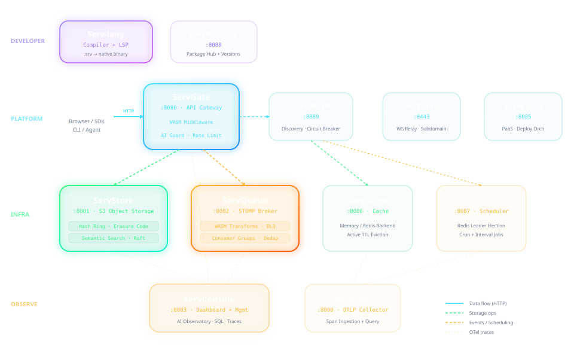

Build APIs, event-driven systems, storage services, and observability workflows without assembling dozens of disconnected tools. Servverse brings language, gateway, messaging, storage, and operations into a single open platform.
server "8080"
broker "servqueue://localhost:61613"
database "sqlite://app.db"
every 5s {
log.info("Healthcheck running...")
publish "health.logs" "System: OK"
}
route "POST" "/orders" (req) {
let order = req.body
publish "orders" order
return { "status": "queued" }
}
subscribe "orders" (msg) {
db.exec("INSERT INTO orders VALUES (?)", msg)
}Most teams assemble a distributed platform. Servverse ships one.
| Capability | Traditional Stack | Servverse |
|---|---|---|
| API Service | Spring Boot / Express / Flask | route "GET" "/api" (req) { ... } |
| Scheduled Jobs | Cron + daemon + monitoring | every 5m { ... } |
| Message Queue | RabbitMQ / Kafka + client libs | ServQueue — built-in STOMP broker |
| Object Storage | AWS S3 / MinIO + SDK + billing | ServStore — self-hosted S3 + semantic search |
| API Gateway | Kong / Nginx + Lua scripts | ServGate — WASM middleware + AI guard |
| Observability | Grafana + Jaeger + Prometheus | ServConsole — unified dashboard |
| Deploy | Dockerfile + CI/CD + Terraform | serv deploy --target docker |
| Caching | Redis + client SDK + config | ServCache — pluggable memory/Redis with TTL |
| Auth & RBAC | Auth0 / Keycloak + custom JWT | ServShared — unified JWT + role-based access |
| Dev Environment | Docker Compose + .env + docs | serv dev main.srv — one command |
Choose the model that fits your organization's security and scale requirements.
| Feature / Capability | Open Source (OSS) | Enterprise (EE) |
|---|---|---|
| Licensing | Apache 2.0 | Commercial Enterprise License (EULA) |
| Multi-Tenancy | Single tenant only | Dynamic multi-tenancy & strict isolation |
| AI-Native Security | Basic prompt check | Prompt injection firewall & auto PII redaction |
| GraphQL Federation | Single endpoint schema | Federated schema merging & LLM semantic routing |
| Cluster Replication | Local clustering | Multi-region active-active database replication |
| Support & SLA | Community Slack / GitHub | 24/7 SLA-backed support |
Four integrated layers operating via the SERVVERSE_DISCOVERY protocol.
A domain-specific language where routes, brokers, databases, and cron are syntax — not libraries. Compiles to native binaries via Go codegen.
API gateway with WASM middleware and AI guards, service mesh with circuit breaking, secure dev tunneling, and PaaS deployment orchestration.
Self-hosted S3 storage with semantic search, STOMP messaging with WASM transforms, distributed cache with Redis backend, and leader-elected scheduling.
Glassmorphic dashboard with AI agent observatory, SQL workbench, waterfall trace viewer, and infrastructure provisioning controls.
All services connected via SERVVERSE_DISCOVERY — OTel traces propagated end-to-end

Select a component to inspect its features and rationale.
A domain-specific language that compiles to native binaries via Go codegen. Infrastructure becomes syntax.
route, broker, store, cache, ai — declare what you need..srv files to typed TypeScript, Python, Go clients.serv docs generate. Streaming via stream/yield.spawn with worker pool limits. Pipe operator |> for data flows.WebAssembly-powered reverse proxy that inspects, redacts, and protects at the network edge. Now 100% complete core.
/api/docs.Lightweight library-level service discovery, client-side load balancing, retries, and circuit breaking.
Distributed STOMP-compliant message broker with server-side WASM transforms and guaranteed delivery.
Distributed S3-compatible object storage with consistent hash rings and semantic indexing.
High-performance caching service with pluggable backends (in-memory & Redis) and built-in TTL evictions.
Premium glassmorphic control pane for monitoring, configuring, and tracing the Servverse. All features 100% complete.
Lightweight S3-backed community package registry for sharing modules.
serv publish and serv install — done.Secure local tunnel relay and client for exposing local services to the internet natively.
Lightweight process orchestrator and application deployment backend for the Serv ecosystem.
Dedicated scheduling coordinator for executing recurrent cron and interval tasks across clustered microservices.
Lightweight OTLP/HTTP collector with hierarchical trace tree reconstruction and waterfall visualization.
/v1/traces POST endpoint. Drop-in replacement for heavy Jaeger/Tempo collectors.Secure identity and authentication provider supporting OIDC token issuance, account lockout, and reset workflows.
POST /oauth/token) supporting the client_credentials grant flow.auth.register(), auth.login(), and auth.currentUser().Intelligent database proxy featuring read/write splitting, multi-dialect validation, and query telemetry.
SELECT queries to Replica nodes and writes to Primary nodes.$1 vs. MySQL ? placeholder validation).database "servdb://pool-name/dbname" connection strings.Transactional message delivery hub supporting multiple output channels, retries, and Go templating.
ServQueue).mail.send(to, template, data) and notify(channel, msg).Stateful execution engine for multi-step DAG workflows, durable checkpointing, and Saga rollbacks.
.state files to resume executions from the last step.A complete REST API in ~100 lines. The same in Go would be 400+.
server "servgate://localhost:8080?port=3000"
database "sqlite://tasks.db"
cache "in-memory"
migration "create_tasks" {
db.query("CREATE TABLE IF NOT EXISTS tasks (...)")
}
route "GET" "/api/tasks" (req) {
let cached = cache.get("tasks_list")
if cached != nil { return cached }
let rows = db.query("SELECT * FROM tasks")
cache.set("tasks_list", rows, "30s")
return { "tasks": rows }
}
route "POST" "/api/tasks" (req) {
let title = json.parse(req.body).title
db.query("INSERT INTO tasks (title) VALUES (?)", title)
return { "created": true }
}
// Auto-cleanup every hour
every 1h {
db.query("DELETE FROM tasks WHERE status='done' AND completed_at < datetime('now','-7 days')")
}serv run showcase/task-api/main.srv --watch
Launch the entire platform locally in minutes.
$ git clone https://github.com/vyuvaraj/servverse.git
$ cd servverse
$ podman compose up --build
Building ServStore, ServQueue, ServGate...
Building ServCache, ServCron, ServMesh...
Building ServConsole, ServRegistry, ServTunnel...
✓ All 12 services running (ports 8080-8090, 8443)
# Windows (Scoop)
$ scoop bucket add serv https://github.com/vyuvaraj/scoop-serv
$ scoop install serv
# macOS / Linux (Homebrew)
$ brew tap vyuvaraj/serv && brew install serv
$ serv init myapp && serv run myapp/main.srv
✓ Server listening on :8080
$ serv dev main.srv --services all
✓ ServStore :8081 | ServQueue :8082 | ServCache :8086 | ServGate :8080
✓ Hot-reload active — editing main.srv rebuilds instantly
:8080:8081:8082:8083:8443:8085:8086:8087:8088:8089:8090:8094:8096:8097:8098:16686Architectural reviews, design decisions, and hands-on developer guides.
How a custom compiler, an S3 object store, a STOMP queue, an API gateway, and a glassmorphic console fit together.
Read Article →What if building a microservice was as simple as describing what it should do?
Read Article →Sandboxed WASM middleware, PII redaction, prompt blocking, and semantic caching at the edge.
Read Article →STOMP messaging, sliding-window dedup, DLQ, and serverless WebAssembly transforms.
Read Article →Semantic search, time travel, erasure coding, and compute-near-data in one binary.
Read Article →OTel waterfalls, hash ring visualizers, SQL workbench, and runtime controls.
Read Article →Resilient in-memory load balancing, heartbeats, and circuit breaking without sidecars.
Read Article →Exposing local microservices natively with subdomain routing and request debugging.
Read Article →Deploying and running backend processes with dynamic gateway auto-routing sync.
Read Article →Launch the complete Servverse stack locally in minutes. Everything integrates automatically.